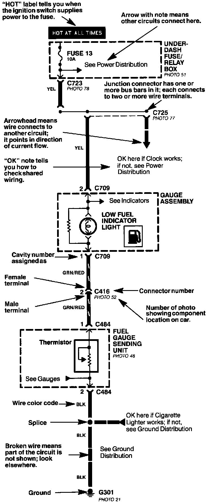

Circuit Schematics
Circuit Schematics:

Each schematic represents one circuit. A circuit's wires and components are arranged to show current flow, from power at the top of the image, to ground, at the bottom.
Other circuits may share power or ground terminals or wiring with the circuit shown. A wire that connects one circuit to another, for example, is cut short and has an arrowhead at the end of it pointing in the direction of current flow. Next to the arrowhead is the name of the circuit or component which shares that wiring. To quickly check shared wiring, check the operation of a component it serves. If that component works, you know the shared wiring is OK.
All connectors are numbered (C709, C416, etc.). Below each connector number (except those for components) is the number of a photo showing the connector's location on the car. Connector cavities are also numbered. The numbering sequence begins at the top left corner of the connector as seen. Disregard any numbers molded into the connector housing.
Wires are identified by the abbreviated names of their colors; the second color is the color of the stripe. Wires are also identified by their location in a connector. The number "2" next to the male and female wire terminals at C416, for example, means those terminals join in cavity 2 of connector C416.